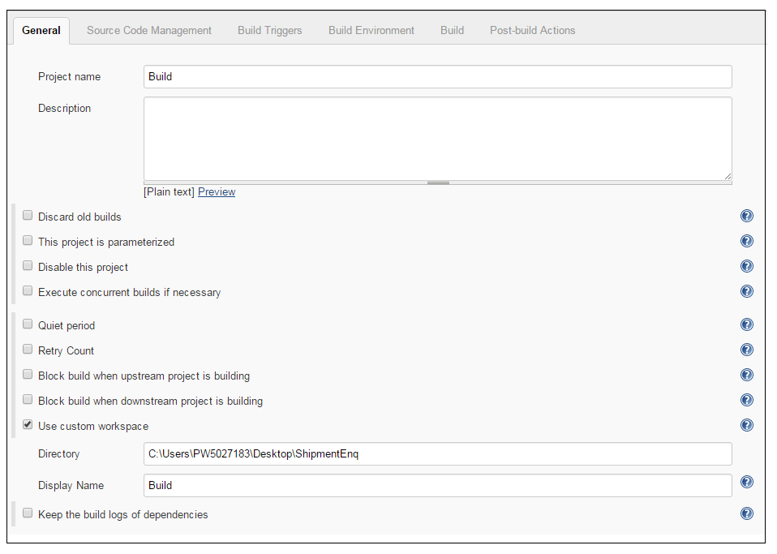
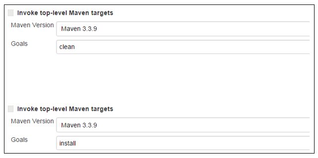
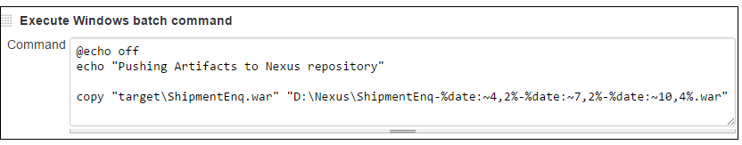

Jenkins
Setup of Build job in Jenkins
- Click on New Item to create new job.
- Enter an item name as Build.
- Select Freestyle project and click on Ok.
- A Build job will be displayed on dashboard.
- Click on Build job.
- Click on Configure Link.
Code Checkout
Jenkins Workspace can be created for code checkout by configuring the directory path (like mentioned below) .Jenkins will copy the developer Change Set from SVN/GIT repository to Jenkins build server workspace.

Execution of Build
Once the checkout is complete, Jenkins will invoke the setting.xml path to clean and will install the build with below Jenkins configuration.

Verify Reports and Artifacts created by Build
On successful build execution, Reports and Artifacts (JUnit, JaCoCo, and Sonar) will be generated. By verifying these reports, Jenkins will analyze if threshold value is up to the mark and will notify to the developer accordingly.
E.g.: If the threshold is less than 80%, Jenkins will not use the respective code for deployment and notifies to the developer.
Copy Artifacts to Nexus repository
Jenkins will verify the reports and artifacts and then it will push the previous build to Nexus repository.

|